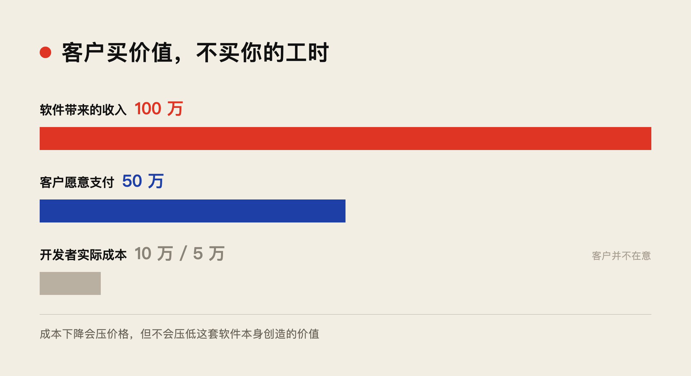
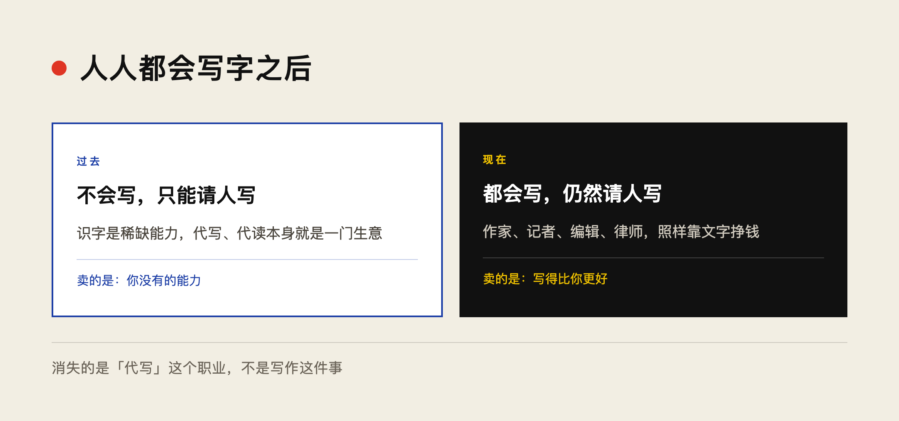
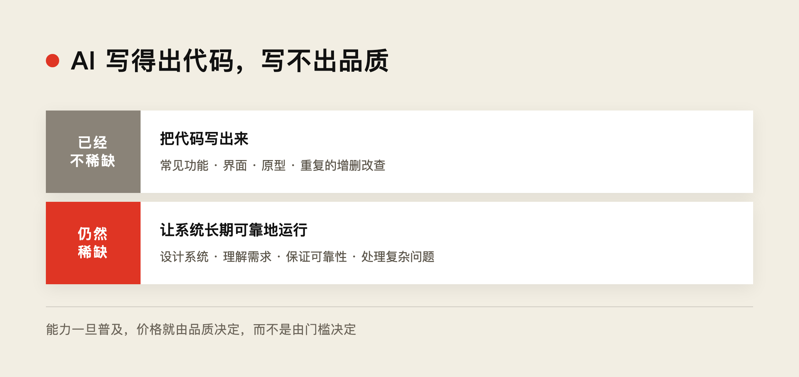

近年来，一直有一种说法：AI 正在毁掉软件行业。
这么说并不是没有原因的。许多软件公司拿不到订单了，客户不再愿意为软件支付高价，许多程序员也面临失业。因为过去需要专业程序员完成的工作，现在 AI 就可以编写。
但与此同时，还有另一种著名的说法：软件正在吞噬世界（Software Is Eating the World）。
今天，世界上越来越多的事情都由软件驱动。甚至 AI 公司，本质上也是软件公司。
那么，这两种说法究竟哪一种是对的？
最近，我自己也收到不少合作邀请，希望我帮助开发软件。有意思的是，许多客户自己也有 AI，也可以用 AI 编写代码，但他们对自己开发出来的产品并不满意，仍然希望找专业人士来完成。
所以，似乎这两种说法都是对的。
▲ ■ ●
一、软件的价值与开发成本
如何理解这个看似矛盾的现象？
首先，软件的重要性是不言而喻的。
不论是软件还是 AI，简单来说，其价值都是节省人力，尤其是在复杂系统的管理中。
软件大幅降低了人们沟通与协作的成本。很多过去需要大量人员才能完成的工作，现在通过软件就可以实现。
因此，软件创造的价值是不言而喻的。
而这种价值，并不会因为软件开发成本的变化而改变。
在我看来，这就是客户价值。
客户价值并不是由开发成本决定的。
比如，一个软件系统能够为客户带来一百万元的收入，那么客户可能愿意为它支付五十万元。至于开发者究竟花了十万元，还是五万元完成这个系统，客户其实并不在意。
客户关心的是软件能够为他创造什么价值，而不是开发者为此花费了多少成本。
当然，软件的市场价格还受到竞争和供给的影响。当开发成本降低，竞争者增加时，价格也可能下降。但这并不意味着软件为客户创造的价值也随之下降。
这是两个不同的问题。

▲ ■ ●
二、传统软件行业的商业模式
传统软件行业有一个问题。
由于软件开发需要专业技能，而掌握这些技能的人相对稀缺，因此软件开发的人力成本长期较高。
对于许多特定的客户需求，开发一套软件的成本甚至可能超过客户能够获得的价值。
所以，传统软件行业一直需要解决一个重要问题：商业模式。
一种方法是规模化，把同一套软件销售给大量客户，分摊开发成本。
另一种方法则是通过订阅、数据、业务流程或者系统兼容性，让客户长期依赖自己的软件。
某种程度上，这也是在绑定客户。
而实际上，许多常见的软件，例如会计软件、电商系统，其核心业务逻辑未必有多复杂。
更有意思的是，许多软件企业赚的也不是软件本身的钱。
比如一些互联网平台，通过软件吸引并绑定客户，再通过流量、广告、推广和交易等方式收费。
软件本身可能是免费的，甚至是亏本提供的，但企业可以通过控制客户关系和交易渠道获利。
这当然是一种成功的商业模式，但软件的价值并不一定要通过这种方式实现。
相反，如果一家企业开发出真正实现无人驾驶的软件，让汽车能够自动行驶，那么客户就可能愿意按次或者按年付费。
虽然客户也可以自己开车，或者雇人开车，但这并不妨碍无人驾驶软件创造价值。
这就好像一个人完全可以自己在家做饭，但世界上依然有饭店，也依然存在厨师这个职业。
能够自己完成一件事，与是否愿意付钱让专业人士把这件事做得更好，是两个不同的问题。
▲ ■ ●
三、当人人都能写字时
我觉得今天的软件行业，有点像过去代人写信的生意。
以前很多人不识字，也不会写字，因此需要找专门的人代写书信。收到信之后，还要找人代读。
对于这些人来说，读写本身就是一种稀缺的专业能力。
但是，当全民识字之后，代写、代读书信作为一种职业，就逐渐消失了。
然而，这并不意味着文字工作者消失了。
恰恰相反，今天依然有大量专业文字工作者。作家、记者、编辑、律师，以及各种专业文书的撰写者，仍然依靠文字创造价值。
人人都会写字，但并不意味着人人都能写出好的小说、新闻报道、法律文书或者专业报告。
人们依然愿意为高水平的专业写作付费。
原因很简单。
识字是一种能力，而写出好的作品是一种品质。
过去，人们可能因为自己不会写字，而不得不花钱请别人写字。
现在，人们已经会写字了，但仍然愿意花钱请专业人士写，因为专业人士能够写得更好。

软件行业可能正在经历类似的变化。
当人人都可以使用 AI 编程时，依靠别人不会编程而存在的业务可能逐渐消失。
但是，专业软件工程师并不会因此失去价值。
人们依然愿意为高水平的软件工程师付费，因为他们能够开发出品质更好的软件。
真正的软件工程，不仅仅是把代码写出来，还包括如何设计系统、理解需求、保证可靠性、处理复杂问题，以及让软件能够长期稳定地运行。
就像人人都会写字，却依然需要专业作家一样，人人都能编程，也依然需要优秀的软件工程师。
软件行业正在从一种能力的特权，转向一种品质与价值的竞争。
这才是 AI 对软件行业更深刻的改变。

▲ ■ ●
四、软件的价值最终由客户决定
这也意味着，软件产品的价值将越来越直接地由客户决定。
客户可能不会再花几百万元购买一个普通的记事本软件，因为这样的功能已经很容易实现。
但是，对于真正具有专业功能的软件，例如手术规划软件，客户依然有需求，也愿意为其付费。
因为手术规划软件的价值，是由手术本身的需求、风险和效果决定的，而不是由软件的开发成本决定的。
一套手术规划系统，如果能够帮助医生完成复杂的手术规划，改善手术质量、降低风险，那么它就具有明确的客户价值。
这种价值，不会因为 AI 能够写代码而消失。
当然，客户也可以自己使用 AI 开发这样的软件。但如果专业团队能够提供更可靠、更准确、经过验证的产品，客户依然有理由选择专业产品。
这也是为什么一些客户即使自己有 AI，仍然希望请我帮助开发软件。
他们缺少的可能已经不是代码，而是能够真正解决问题、达到专业品质的软件。
反过来，随着 AI 降低开发成本，这些专业软件还可能更加普及。
过去，一些专业领域的市场规模有限，开发成本又高，软件即使能够创造价值，也未必有足够好的商业模式。
现在，如果开发成本显著降低，再通过按次使用、按实际服务收费的方式提供给客户，商业化反而可能更加容易。
例如，一套专业手术规划系统，过去可能需要医院花费大量资金购买。而未来，医院或许可以根据实际使用次数付费。
软件的单次价格可能下降，但使用范围和使用次数却可能大幅增加。
开发软件越来越便宜，并不意味着软件创造的价值越来越小。
相反，它可能让过去无法商业化的专业服务，第一次有了普及的机会。
▲ ■ ●
五、每个人都可以把自己的能力变成软件
这也意味着另一个更重要的变化。
在过去，一个人即使有很好的想法，或者拥有某种专业技能，也不一定能够将它转化成软件。
因为开发软件需要资本支持，需要组建专业的技术团队，还需要投入大量的时间和资金。
一个想法能否成为产品，往往首先取决于你有没有资源把它开发出来。
而在 AI 时代，这个门槛正在迅速降低。
每个人都可以尝试把自己的知识、经验和专业能力转化成软件，交给 AI 编写和实现。
然后，把软件提供给其他人使用，并从中收费。
比如，一个医生可以把自己的临床经验转化成手术规划软件；一个工程师可以把自己的设计方法变成工程工具；一个会计师可以把自己处理复杂财务问题的经验变成专业软件服务。
过去，这些人需要寻找程序员，组建公司，甚至获得融资，才能将自己的知识产品化。
现在，他们可以借助 AI，自己完成相当一部分开发工作。
这并不意味着专业程序员不再重要。
恰恰相反，当每个人都可以开发软件时，人们对软件品质的要求也可能越来越高。
就像每个人都会拍照，并不意味着专业摄影师不再有价值。每个人都会写字，也并不意味着优秀的作家不再有价值。
专业人士的价值，不再仅仅来自某种能力的稀缺，而是来自他们能够把事情做得更好。
过去，很多软件企业是由掌握编程技术的人创办，再去寻找客户和应用场景。
未来，可能有越来越多的软件企业，是由真正理解行业问题的专业人士创办，再借助 AI 和软件工程师，将自己的知识转化成产品。
软件开发能力的普及，也许会让软件行业从少数技术公司的领域，变成各行各业专业人士都能参与的市场。
而最终，哪些软件能够生存，哪些软件能够赚钱，将更多地由客户决定。
▲ ■ ●
六、AI 毁掉了什么？
所以，AI 究竟是在毁掉软件，还是在推动软件吞噬世界？
我认为，这两件事可能正在同时发生。
AI 正在消除编程能力的稀缺性，让许多过去依靠技术门槛生存的商业模式失去优势。
但与此同时，AI 又大幅降低了软件开发成本，让越来越多的人能够开发软件，让越来越多的专业知识能够通过软件提供服务。
软件的社会价值可能越来越大，而一些传统软件公司的利润却可能下降。
这并不矛盾。
因为创造价值与获取利润，从来不是同一回事。
当开发软件成为一种普遍能力时，仅仅因为会编程而获得高额报酬，将变得越来越困难。
但是，能够开发出高品质软件的专业工程师，依然可以获得很好的报酬。
能够解决复杂问题、创造实际客户价值的软件企业，也依然有机会获得丰厚的利润。
过去的软件行业，很大程度上受到资本、开发成本和专业人才稀缺性的限制。
未来的软件行业，则会越来越直接地面对一个问题：
你究竟能为客户创造什么价值？
客户不会因为你的软件开发起来很困难，就一定愿意支付高价；也不会因为你的软件是 AI 编写的，就一定不愿意付费。
如果软件能够创造真实的价值，并且比客户自己完成得更好，客户就有理由为它付费。
这也许正是软件行业真正走向成熟的过程。
当人人都能写字时，代人读信、写信的职业逐渐消失了，但作家、记者、编辑和各种专业文字工作者依然存在。
而且，文字的应用并没有减少，反而变得更加广泛。
同样，当人人都能编程时，软件工程师也不会消失。
人们依然会为专业、高水平的软件工程师付费，为更好的软件品质付费。
只是，软件不再因为编程能力的稀缺而天然具有高价。
软件行业正在从能力的特权，转向品质与价值的竞争。
而 AI 不仅降低了软件的生产成本，也让更多人的知识、经验和专业能力，有机会转化成软件，为更多人提供服务。
AI 不是让软件不再值钱，而是让更多有价值的东西，终于能够成为软件。